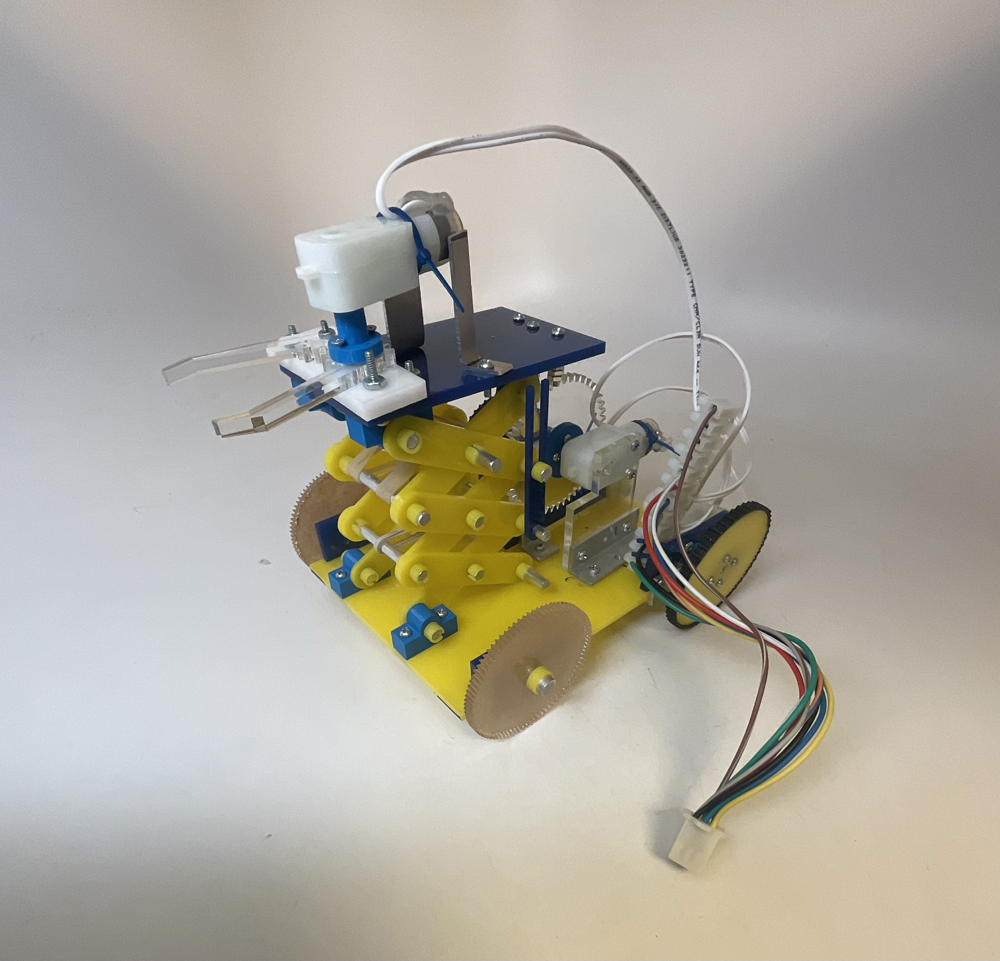
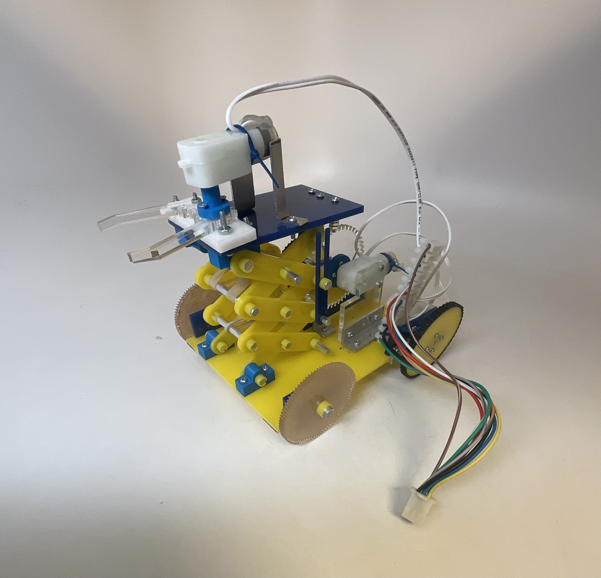
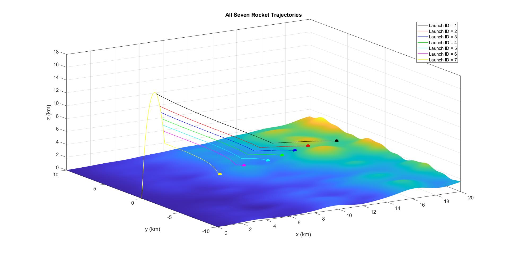
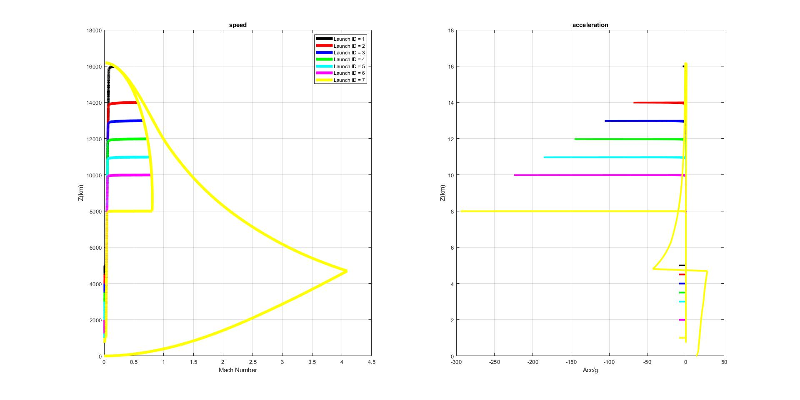
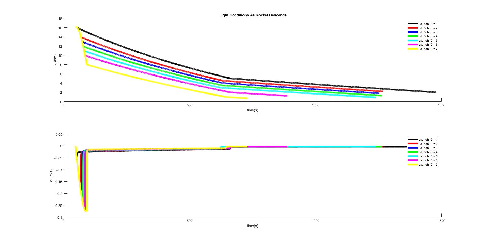
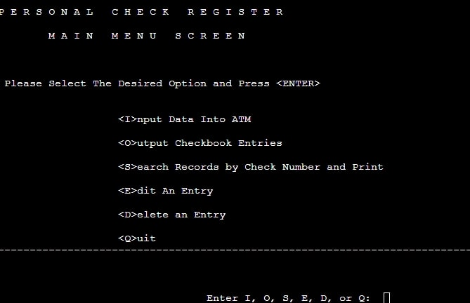

Projects
Material Failure Test
This project entailed conducting a comprehensive stress test on a cantilever beam. Using precise instrumentation and analytical techniques, the beam's structural integrity was rigorously assessed under varying loads and conditions. The study encompassed the application of static and dynamic loads, with a focus on observing deformation, strain distribution, and stress concentrations. Advanced software tools were employed for data acquisition and analysis. The project provided valuable insights into material behavior and structural performance, with potential applications in optimizing beam designs for real-world engineering applications. The results contributed to enhancing the understanding of the relationship between material properties and their relative toughness.


Controller Design for a DC Motor
The goal of this project was to design a controller for a motor attached to the shaft of a flywheel. The model was described by a unique transfer function with moment of inertia, damping coefficient, and conversion factor from voltage to torque being held constant. The input voltage and its varying forms such as step and sinusodial were utilzied to test the response of the system. This experiment required deep understanding signals, systems, and controller design in order to get precise respones from the motor assembly.


Item Sorting Machine
The goal of this project was to contribute to the advancement of item sorting technology. This involved the creation of an advanced item sorting machine, leveraging a diverse skill set in various engineering diciplines. Through hand sketching and CAD proficiency (AutoCAD for 2D and AutoDesk for 3D), concepts were translated into precise virtual models. The use of Rapid prototyping, laser cutting, CNC machining, and 3D printing expidited the fabrication process. Furthermore, the efficiency of the machine was ensured by proficiency in shop tools, machine design principles, and physics-driven analysis. Effective teamwork, project management, and risk reduction strategies allowed for the project to be completed in seven weeks. Additionally, strong communication skills in both oral presentations and written reports was a pivotal role in conveying complex engineering concepts.
.jpg)
.gif) 

Rocket Recovery Simulation
The objective of the project was to simulate the trajectories of a rocket as it descends onto a mountainous terrain. Along the trajectories, the motion of the rocket was assumably influenced by propulsion, air drag on the rocket body, gravity, wind advection, and the parachutes during recovery. Various launches were simulated and analyzed to examine how the deployment of the parachutes affected the flight dynamics.
  Automated Teller Machine
Developed a program provided users with a user-friendly interface for conducting basic banking transactions in a secure and efficient manner. The program also gave the users to the ability to store entries, withdraw cash/deposit cash, fund transfers, and PIN-based security checks. The Program also gave the users the freedom to access any transactions through a "history" feature. Finally, the console allowed for transactions to be printed output in the form of a receipt. The entire project was utilizing C++ programming language and required deep understanding of pointers, functions, linked-lists, as well as object-based coding.
